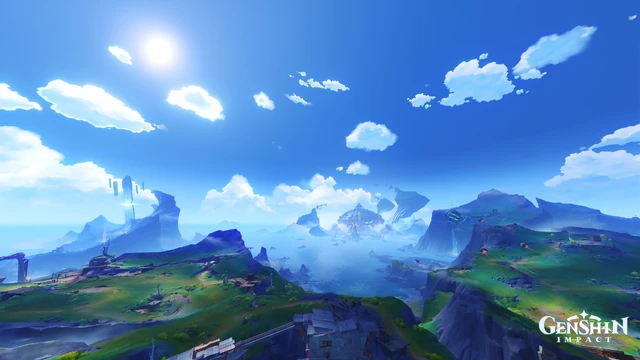

Nod-Krai · Geography & Locations
Nod-Krai: The Northern Borderland
Nod-Krai is a self-governing borderland at Snezhnaya’s southern edge, where Kuuvahki and competing local factions shape daily life. The Song of the Welkin Moon arc explored its lunar traditions and Wild Hunt; the main Archon Quest has since moved into mainland Snezhnaya.

A self-governing edge of Snezhnaya
Nod-Krai is an autonomous, self-governing region at Snezhnaya’s southernmost edge. Nasha Town is a major settlement and trading hub, with the Voynich Guild among its prominent local institutions. Its political status and the presence of groups from beyond the region make it different from the seven Archon-governed nations.
The region first opened to the Traveler through Lempo Isle, Hiisi Island, and Paha Isle. Hiisi is home to the Frostmoon Scions; Nasha Town is the place where the Traveler first meets the local merchants and the Kuuvahki-powered everyday technology.
Kuuvahki and the competing factions
Kuuvahki is an ancient energy found throughout Nod-Krai. It influences local devices, creatures, and combat. The Fatui’s Kuuvahki Experimental Design Bureau sought to turn it into fuel for war engines, bringing them into conflict with groups who protect the region or follow their own traditions.
The Frostmoon Scions preserve worship of Kuutar, the Moon Goddess. The Lightkeepers defend Nod-Krai against the Wild Hunt, an Abyssal force. The Voynich Guild organizes trade in Nasha Town. These groups are not a single political authority: each has distinct aims, and their alliances shift with the story.
The lunar story and the Wild Hunt
Song of the Welkin Moon follows the Fatui’s search for Ancient Moon’s Remnants, the Scions’ faith, and the threat of the Wild Hunt. The story reveals Columbina as the Moon Maiden Kuutar and connects local lunar traditions to the Three Moons. The Wild Hunt’s campaign is tied to Rerir, one of Khaenri’ah’s Five Sinners.
The arc runs from Version 6.0 through 6.6, then carries its final acts to Sumeru. Nod-Krai remains a setting with its own people and quests, but the region’s Moon story is no longer an unreleased future chapter. Speculation that Nod-Krai is the remnant of a failed fourth moon is not confirmed by the game.
Nod-Krai after the Luna arc
By Version 7.2, the Archon Quest has moved into mainland Snezhnaya. A World Quest, Companions on the Frost Road, shows Nod-Krai receiving people evacuated from areas affected by the Hallowing. The Fatui and Frostmoon Scions cooperate in that effort, and the quest describes Hiisi Island as less affected by the aftershocks.
That later role keeps Nod-Krai connected to the wider crisis without making it the center of Chapter VII. The region’s Kuuvahki, local institutions, and relationships with the Moon Goddesses remain useful context for its ongoing world quests and characters.
This is an original CoreGG reading guide, not an official HoYoverse article or a reproduction of the game text. Source links below identify the records used so you can check the original context.
Sources & references
Check these sources for the original game text and reference trail.